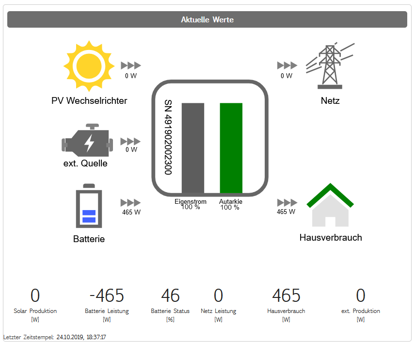

Introduction¶
The purpose of this application is to maximise electric car (EV) charging with local solar power. The application monitors the power fed into the grid, and switches car charging on, if the car is at home, needs charging and enough power is collected from the solar panel. Normally the car charging is set to 60% or 70%, and charged overnight, if necessary. During the day the car is charged up to 90% (or higher if set higher) if solar power is available.
The application runs on a Raspberry Pi which is connected to the local network and has internet access (through the router). The Main application monitors the state of the PV system and power fed to the grid. If all conditions are met car charging is started if car conditions are met (at home, plugged in, needs charging and connection established).
The application avoids excessive on/off switching and car polling.
Solar installation¶
94 solar panels on the roof with 27.7 kWp power are installed. Two inverters (“PV Wechselrichter” and “ext. Quelle”) feed the E3DC S10 system. Depending on power consumption (“Hausverbrauch”) and production main consumers are switched on or off by the E3DC system.
Consumers which can be switched on/off are:
hot water boiler for 200l (2000W)
hot water boiler for 300l (3000W)
heat pump overheating buffer tank with 300l (4000W) (SG Ready Standard)
battery of E3DC S10 with 19.8kWh (+/- 3000W) (“Batterie”)
All consumers draw power only if the target temperatures or state of charge are not yet met. Excessive power is delivered/taken to/from the grid (“Netz”) .
A Tesla car draws 11kW when charging through the wall charger.
“Solar fuel” costs¶
Maximising self-sufficiency is including car charging reduces load to the grid and minimes power costs. As each installation will have different prices and costs all trigger parameters must be adapted to the specific installation. In this installation the costs are as follows$.
Power from the grid costs ~ CHF 0.15 - 0.19 (depending on day time and weekday)
Power fed into the grid yields return of CHF 0.038 after income taxes.
Hence charging for 100km (200W/km) costs approximately between CHF 3.00 to 3.80 with grid power. The opportunity costs for 100km with 100% solar power are CHF 0.76 in comparison.
Charging parameters¶
Obviously the “optimal” charging depends on costs, main consumers, charging power, driving and consumption habits, technical system, power production and other factors. The parameters for switch power on and off are therefore estimated and can be adjusted. They are defined in “newdefaults.json”.
1 2 3 4 5 6 7 8 9 10 11 12 13 14 | {
"seconds_btw_updates": 300,
"fname_charging_status": "solar/data/charging_flag.csv",
"soc_minimum": 20,
"evsoc_std": 65,
"evsoc_limit_low": 80,
"evstart_power_low": -3000,
"evstop_power_low": 6000,
"evsoc_limit_high": 90,
"evstart_power_high": -5000,
"evstop_power_high": 5000
}
|
-
seconds_btw_updates¶ Seconds between car updates (activation of car API)
-
fname_charging_status¶ Path and filename for saving charging_flag status e.g. “solar/data/charging_flag.csv”
-
soc_minimum¶ Minimum state of charge of house battery before allowing car charging. When car charging is switched on depending on day time or cloud coverage the solar power production is not sufficient. The house battery reduces the gap and thus minimes grid consumption.
-
evsoclimit_low¶ Up to this lower charging limit the following trigger levels are valid
-
evstart_power_low¶ Start charging when power to grid (negative) exceeds this limit
-
evstop_power_low¶ Stop charging when power from grid (positive) exceeds this limit
-
evsoclimit_high¶ Up to this higher charging limit the following trigger levels are valid
-
evstart_power_high¶ Start charging when power to grid (negative) exceeds this limit
-
evstop_power_high¶ Stop charging when power from grid (positive) exceeds this limit